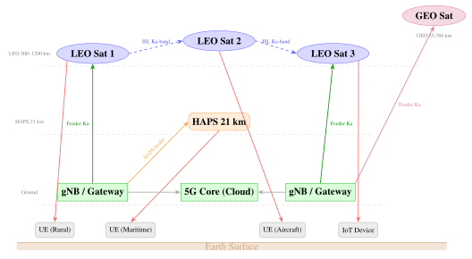

Chapter 30: 6G and Non-Terrestrial Networks¶
“The next generation of wireless will not merely improve speed—it will dissolve the boundary between the sky and the network.”
— 3GPP Technical Report 38.811
The integration of satellite and aerial platforms into the mobile network is no longer a research concept but a rapidly advancing engineering reality. Third-generation Partnership Project (3GPP) standardization of Non-Terrestrial Networks (NTN) has moved from study phase in Release 15 to normative specifications in Release 17 (frozen June 2022), with enhancements ongoing through Release 19. Simultaneously, commercial and pre-commercial deployments are turning theoretical link budgets into products (as of 2025): SpaceX’s Starlink direct-to-cell satellites sent their first text messages to ordinary phones in January 2024 and entered service with partner operators later, AST SpaceMobile’s 64 m2 BlueWalker 3 test satellite demonstrated data connections to unmodified smartphones, and Apple’s Emergency SOS via satellite has been available on iPhones since late 2022 through Globalstar’s LEO constellation.
Looking beyond 5G NTN, the 6G vision encoded in ITU-R IMT-2030 requirements explicitly designates non-terrestrial networks as a native component of the 6G architecture—a fundamental departure from 5G’s terrestrial-centric design with satellite connectivity retrofitted as an afterthought. This chapter traces the standardization pathway from 3GPP Release 15 study items to Release 19 enhancements, analyzes the NTN architecture (transparent vs. regenerative payload, timing advance management, Doppler compensation), examines direct-to-device commercial deployments, describes HAPS (High-Altitude Platform Station) technology, and outlines the 6G Space-Air-Ground-Sea integrated network vision including terahertz ISLs, Open RAN for NTN, and energy efficiency targets.
30.1 Introduction¶
Non-terrestrial networks comprise satellite (LEO, MEO, GEO), HAPS, and UAV platforms that extend cellular connectivity beyond the reach of terrestrial base stations. The commercial motivation is compelling: the International Telecommunication Union estimated in 2024 that roughly 2.6 billion people were still offline, many of them in remote or rural areas where terrestrial infrastructure is economically difficult to justify. Maritime and aeronautical connectivity markets demand global coverage that only satellites can provide. Emergency communications after natural disasters require infrastructure independent of ground-based assets.
The technical challenges that historically separated satellite and cellular systems are profound. Satellite links impose propagation delays of about 2 ms (LEO at 600 km, directly overhead) to roughly 240 ms (GEO, user to gateway via the satellite) one-way, versus \(<0.5\) ms for terrestrial 5G. Doppler shifts at LEO range from \(\pm\)50 kHz at S-band (\(f = 2\) GHz) to \(\pm\)0.76 MHz at Ka-band (\(f = 30\) GHz). Cell sizes are enormous—a LEO satellite at 600 km illuminates a footprint 600–2000 km in diameter, compared to 200 m for a 5G small cell. These differences require fundamental protocol modifications: the standard 3GPP Hybrid Automatic Repeat reQuest (HARQ) process (8 processes with 8 ms round-trip timing) cannot function with a 600 ms GEO round-trip time.
NTN Altitude Regimes and Delay Budget:
-
LEO (160–2000 km): 1–13 ms one-way; orbital period 1.5–2.5 hours; coverage per satellite 300–3000 km
-
MEO (2000–35,786 km): 13–120 ms; period 2–24 hours; navigation satellites
-
GEO (35,786 km): 240 ms one-way; stationary; 3 satellites for near-global coverage
-
HAPS (17–22 km): \(<0.1\) ms; quasi-stationary; 140–200 km coverage per platform
3GPP NTN standardization addresses these challenges with protocol adaptations (extended HARQ timers, UE-based timing advance pre-compensation, Doppler pre-compensation) while reusing the maximum possible NR air interface functionality to reduce implementation complexity.
30.2 3GPP NTN Standards Evolution¶
30.2.1 Release 15 and 16: Study Phase¶
3GPP NTN standardization began with study items in Release 15 (2018) and Release 16 (2019–2020):
-
TR 38.811 (Study on NTN, v15.4.0, May 2019): Channel model, propagation delay, Doppler analysis for LEO/MEO/GEO/HAPS. Identified key challenges: round-trip propagation delay impacts on HARQ and scheduling, frequency offset from Doppler, large cell size requiring large TA values, feeder link bandwidth, mobility management.
-
TR 38.821 (Solutions for NTN, v16.0.0, January 2020): Evaluated solutions including UE-side TA pre-compensation using GNSS and satellite ephemeris, Doppler pre-compensation, HARQ process adaptation, and timing advance extensions.
-
TR 22.822 (SA1 NTN use cases, v16.0.0): Service requirements including continuous broadband access in underserved areas, 3GPP service continuity between terrestrial and NTN, IoT connectivity in remote areas, public safety communications, and in-flight connectivity.
Four NTN scenarios were studied: LEO (200–2000 km), MEO (2000–35786 km), GEO (35786 km), and HAPS (17–22 km altitude), with both transparent (bent-pipe) and regenerative (onboard processing) payload architectures.
30.2.2 Release 17: First Normative NTN Standard¶
Release 17, frozen in June 2022, produced the first normative NTN specifications. Two work items ran in parallel: NB-IoT/eMTC NTN and NR NTN.
NR NTN Key Specifications:
-
TS 38.101-5: User Equipment (UE) radio transmission/reception for NTN (new part 5)
-
TS 38.300 Annex: Architecture enhancements for NTN
-
TS 38.213/38.214/38.321: Physical layer procedures and MAC for NTN
Key Features Introduced in Release 17:
Timing Advance (TA) pre-compensation: The standard NR TA mechanism (base station commands UE to advance its uplink timing) cannot account for the large and dynamically varying propagation delay in NTN. Release 17 introduces UE-side TA pre-compensation:
where \(d_{\text{feeder}}\) is the gNB-to-satellite (feeder link) range, \(d_{\text{service}}\) is the satellite-to-UE (service link) range, \(c\) is the speed of light, and TA is expressed in units of \(T_s = 1/(30720 \times \Delta f_{\text{ref}})\). For GEO, the maximum NR TA value was extended to 67,800 \(T_s\) = 245 ms to accommodate the 240 ms one-way GEO delay. The UE computes \(d_{\text{service}}\) from its GNSS position and the satellite ephemeris broadcast in SIB (System Information Block).
Doppler pre-compensation: The UE pre-compensates its uplink carrier frequency for the satellite Doppler shift using GNSS-derived velocity and satellite ephemeris. Residual Doppler after compensation is \(<\)100 Hz, within the NR frequency error tolerance.
HARQ adaptation: Standard NR uses up to 8 HARQ processes with 8 ms round-trip timing. A GEO link with 600 ms RTT would require 75 processes—impractical. Release 17 allows HARQ process disabling (broadcast via SIB, or configured per bearer), allowing the gNB to operate with a simple ARQ mechanism or rely on upper-layer retransmission. For LEO with \(\sim\)25 ms RTT, HARQ is feasible with 4–8 processes and extended timing.
Scheduling offset extension: The parameter \(k_0\) (PDCCH-to-PDSCH offset) and \(k_2\) (PDCCH-to-PUSCH offset) are extended from the terrestrial range of 0–7 slots to accommodate NTN delays.
NTN Frequency Bands (Release 17):
-
Band n255: 1626.5–1660.5 MHz UL / 1525–1559 MHz DL (L-band, mobile satellite service)
-
Band n256: 1980–2010 MHz UL / 2170–2200 MHz DL (S-band, mobile satellite service)
-
Band n254: 1610–1626.5 MHz UL / 2483.5–2500 MHz DL (L/S-band, mobile satellite service)
-
Ka-band bands for NR-NTN (n510, n511, n512): about 27.5–30 GHz uplink and 17.3–20.2 GHz downlink, a Release 17 addition for fixed and very small aperture terminals
30.2.3 Release 18: Enhanced NTN¶
Release 18 (frozen March 2024), the first release of the 5G-Advanced era, introduced significant NTN enhancements under the eNTN work item:
Earth-Fixed Beam (EFB) Mode: In conventional LEO NTN, satellite beams sweep across the Earth at orbital velocity. EFB mode uses active beam steering to fix a beam over a geographic area (like a GEO footprint) for a configurable dwell time, greatly simplifying UE mobility management and cell reselection. The gNB adapts cell parameters on a beam-granular basis.
Enhanced Inter-Satellite Handover: Release 17 inter-satellite handover required full UE re-connection. Release 18 introduces conditional handover and early measurement reporting to reduce handover interruption time from \(>1\) s to \(<100\) ms, critical for voice and real-time applications.
UE Power Saving for NTN: Extended discontinuous reception (eDRX) periods are adapted for NTN satellite periodicity (\(\sim\)90 min for LEO). Wake-up signal (WUS) transmission allows UE to remain in deep sleep and wake only when data is incoming. Connected-mode DRX parameters are extended for GEO latency.
Multi-TRP Diversity: Multiple transmission/reception points (satellite beams) serve a UE simultaneously (MTRP), providing macro-diversity gain for link reliability in edge-of-beam conditions and improving SINR by 3–6 dB.
30.2.4 Release 19 and Beyond¶
Release 19 (expected 2025–2026) includes:
-
NTN Multicast/Broadcast Service (MBS): Satellite delivery of broadcast content (TV, software updates, emergency alerts) using NR MBS framework—highly efficient for one-to-many distribution.
-
MIMO for NTN: Multiple antenna techniques adapted for large-scale satellite antenna arrays, potentially 2\(\times\)2 or 4\(\times\)4 spatial multiplexing for GEO satellites with multiple beams.
-
eMBB throughput enhancements: Higher spectral efficiency per beam to approach 1 Gbps per satellite beam for LEO.
-
IoT-NTN enhancements: Power consumption optimization for NB-IoT over satellite, duty-cycle relaxation for battery-powered sensors.
Table 30.1 compares key features across NTN releases.
| Release | Freeze Date | Status | Key Features | Key Specs |
|---|---|---|---|---|
| Rel-15/16 | 2018–2020 | Study | TR 38.811 channel model; TR 38.821 solutions; use cases defined; challenges identified | TR 38.811, TR 38.821, TR 22.822 |
| Rel-17 | June 2022 | Normative | TA pre-compensation; Doppler pre-compensation; HARQ disabling; TA extension to 245 ms; NTN frequency bands | TS 38.101-5, TS 38.300, TS 38.213, TS 38.321 |
| Rel-18 | March 2024 | Normative | Earth-fixed beam; enhanced handover; eDRX NTN; WUS; MTRP diversity; GEO NTN specific | TS 38.213 v18, TS 38.321 v18 |
| Rel-19 | 2025–2026 | In progress | NTN MBS; NTN MIMO; eMBB enhancement; IoT-NTN evolution | TBD |
30.3 NTN Architecture¶
30.3.1 Transparent Payload Architecture¶
In the transparent (bent-pipe) payload architecture, the satellite performs only RF frequency translation and amplification: the satellite receives the uplink signal from the gNB (via the feeder link) and retransmits it toward UEs (service link), or vice versa for the uplink path. The 5G NR gNB (gNodeB) base station logic resides entirely on the ground. Advantages: satellite complexity is minimized (no digital processing in space, reducing power, mass, cost, and software development risk); ground-based gNBs can be upgraded without satellite hardware changes; spectrum reuse between feeder and service links is straightforward.
The feeder link carries the Uu air interface (the NR radio interface) transparently. The gNB inserts timing corrections accounting for the double-hop delay before scheduling uplink resources. Starlink Generation 1 satellites operated as bent-pipe for cellular backhaul, and most current commercial NTN systems use transparent architecture.
The delay budget for transparent GEO architecture:
30.3.2 Regenerative Payload Architecture¶
In the regenerative architecture, some or all gNB functions are implemented on the satellite. The 3GPP functional split options allow:
-
Option 2 (DU on satellite): The gNB-DU (Distributed Unit, handling physical and MAC layers) runs on the satellite; the gNB-CU (Centralized Unit, handling RRC, PDCP, SDAP) remains on the ground. The F1 interface connects DU-to-CU via the feeder link.
-
Full gNB on satellite: Complete 5G base station on the satellite; UEs connect directly with standard NR. The feeder link carries only user data (N3 interface) and management.
Regenerative payloads reduce the effective RTT seen by the UE from the full GEO round-trip (600 ms) to twice the service link delay (2\(\times\)120 ms for GEO, 2\(\times\)2 ms for LEO), enabling HARQ to function and reducing scheduling latency. Inter-satellite links (ISLs) in regenerative systems allow routing without returning data to ground stations, further reducing latency (Telesat Lightspeed at 1325 km LEO: 4.4 ms per hop). The trade-off is substantially higher satellite complexity, power consumption, and software development cost.
30.3.3 Timing Advance Management¶
In terrestrial NR, the gNB measures UE uplink timing and commands TA adjustments via MAC CE (Control Element). This loop is untenable with hundreds of milliseconds NTN delay. Release 17 introduces UE-side open-loop pre-compensation:
-
\(\text{TA}_{\text{common}}\): feeder link delay, known to the gNB, broadcast in SIB as a common offset.
-
\(\text{TA}_{\text{UE}}\): service link delay from UE to satellite, computed by the UE from its GNSS-derived position and the satellite ephemeris broadcast in SIB1 (NTN-specific ephemeris IE added in Release 17).
The satellite’s position at any future time is predicted from the broadcast Keplerian elements or state vectors with \(<\)100 m accuracy, giving UE timing pre-compensation accuracy of \(<\)1 \(\mu\)s (\(<\)30 m position error equivalent). The NR TA range was extended from 3846 \(T_s\) (terrestrial) to 67,800 \(T_s\) = 245 ms to accommodate full GEO one-way delay.
For NGSO (LEO/MEO), \(d_{\text{service}}\) changes significantly during a pass: a LEO satellite at 600 km overhead moves from \(d_{\min} = 600\) km to \(d_{\max} = 2000\) km (at 20\(^\circ\) elevation) over a 10-minute pass, varying TA by \(\Delta\text{TA} = 2(2000-600)/(3\times10^5) = 9.3\) ms. The UE continuously updates TA prediction using ephemeris extrapolation.
30.3.4 Doppler Pre-Compensation¶
A LEO satellite at \(h = 550\) km altitude has orbital velocity \(v_{\text{orb}} = \sqrt{\mu_E/(R_E+h)} = 7.59\) km/s. The maximum radial velocity component (at horizon) is approximately \(v_r = v_{\text{orb}}\cos\phi\) where \(\phi\) is the elevation angle. The Doppler frequency shift on the service link is:
At \(f_c = 2\) GHz (S-band), \(v_r = 7.59\) km/s (overhead pass): \(\Delta f_{\text{Doppler}} \approx \pm 50.6\) kHz. At \(f_c = 30\) GHz (Ka-band): \(\Delta f_{\text{Doppler}} \approx \pm 760\) kHz. The NR subcarrier spacing of 15–120 kHz would be completely obliterated without compensation.
Release 17 UE Doppler pre-compensation: the UE computes its radial velocity relative to the satellite from GNSS position+velocity and satellite ephemeris, then pre-shifts its uplink carrier frequency by \(-\Delta f_{\text{Doppler}}\) before transmission. After UE compensation, the gNB sees residual Doppler \(<\)100 Hz from residual ephemeris error and UE position uncertainty, within the NR frequency error budget. The satellite-side Doppler on the feeder link is compensated by the gateway (gNB side).
30.4 Direct-to-Device Satellite Communications¶
30.4.1 Link Budget Challenge for Direct-to-Device¶
A standard smartphone has a nearly isotropic antenna (about 0 dBi gain) and transmits at 23 dBm (200 mW) maximum output power, giving an EIRP of about 23 dBm. The link to a LEO satellite at 1000 km faces free-space path loss (FSPL):
at \(f = 2\) GHz, \(d = 1000\) km. A terrestrial gNB at 100 m would see FSPL \(= 20\log_{10}(4\pi \times 100 \times 2\times10^9/3\times10^8) = 78\) dB—an 80 dB advantage for the terrestrial link. The satellite must recover much of this deficit with a very large, high-gain antenna array: a 30 dBi antenna at 2 GHz needs a diameter of about 2 m (for 60% efficiency), and higher gain and many narrow beams need still larger apertures. This drives the AST SpaceMobile BlueWalker 3 design to a 64 m2 phased array.
The satellite EIRP requirement is:
30.4.2 AST SpaceMobile¶
AST SpaceMobile’s BlueWalker 3 (BW3) prototype satellite, launched in September 2022, was used to demonstrate direct connectivity to unmodified smartphones:
-
Phased array: a 64 m2 deployable planar array, among the largest communications arrays flown in low Earth orbit
-
Frequency: low-band terrestrial mobile spectrum made available by partner mobile network operators
-
Demonstrations (2023): voice and video calls and data sessions with ordinary handsets; peak data rates above 10 Mbps were reported by the company
The first operational BlueBird satellites were launched from September 2024; the company plans a constellation of such satellites at roughly 500 km altitude, with separate feeder links to gateways, and has announced agreements with a number of mobile network operators. Performance, schedule and regulatory status of the commercial service were still evolving as of 2025.
30.4.3 Starlink Direct-to-Cell¶
SpaceX’s Starlink direct-to-cell satellites carry an eNodeB-type cellular payload with a large antenna, so that ordinary LTE phones can connect when the operator lends part of its terrestrial spectrum:
-
Air interface: LTE in a partner operator’s mid-band spectrum (the US service with T-Mobile uses the 1900 MHz PCS band)
-
Capacity: a few Mbps in total, shared across each beam footprint; the service was designed first for text messaging
-
First messages: the first six satellites were launched on 2 January 2024 and the first text messages were sent in January 2024; a beta service followed with T-Mobile in the United States
-
Partner operators: agreements announced with T-Mobile (US), Rogers (Canada), Optus (Australia), KDDI (Japan), One NZ (New Zealand) and others
The regulatory step is the permission, granted in the United States in 2024 under the FCC’s “supplemental coverage from space” framework, for a satellite operator and a terrestrial mobile operator to use the terrestrial operator’s licensed spectrum from space, which the conventional rules for mobile bands did not allow. Rules and services differ between countries and were still changing as of 2025.
30.4.4 Apple Emergency SOS via Satellite¶
Apple’s Emergency SOS via Satellite, announced with the iPhone 14 in September 2022 and available from November 2022, uses Globalstar’s LEO constellation (second-generation satellites at about 1414 km altitude) in the mobile satellite service band n53 (2483.5–2495 MHz):
-
Data rate: very low; the service sends short, compressed messages and the phone guides the user to point it at the satellite
-
Services: Emergency SOS to responders, location sharing through Find My, roadside assistance and, in later software versions, short text messages
-
Business model: Apple announced an investment of about $450 million in Globalstar’s infrastructure in 2022
The service shows that some consumers value emergency satellite connectivity built into a phone. How large the demand will be for broader satellite messaging and data services is not yet established.
30.4.5 Chipset Ecosystem for NTN¶
Commercial NTN requires chipsets integrating 3GPP NTN capabilities:
-
Smartphone chipset vendors (for example Qualcomm and MediaTek) have announced modems and platforms with satellite messaging support, some based on proprietary satellite links and some on 3GPP Release 17 NB-IoT NTN.
-
NB-IoT NTN modules for low-power sensors and trackers, which use the Release 17 narrowband NTN specifications over geostationary and low-orbit satellite networks, have been announced by several module makers.
-
Phone makers have added satellite emergency messaging to flagship models since 2022.
Table 30.2 compares direct-to-device satellite service providers.
| Provider | Satellite | Band | Peak Speed | MNO Partners | Status (as of 2025) |
|---|---|---|---|---|---|
| AST SpaceMobile | BlueWalker 3 / BlueBird | low-band terrestrial | above 10 Mbps (demo) | AT&T, Verizon, Vodafone and others | Test satellite flown; first BlueBirds launched 2024 |
| Starlink D2C | Direct-to-cell satellites | operator mid-band (LTE) | a few Mbps shared per beam | T-Mobile, Rogers, Optus, KDDI and others | Text service in beta/early service |
| Apple/Globalstar | Globalstar LEO | n53 (2.4 GHz) | very low (short messages) | Apple (direct) | Available since late 2022 |
30.5 HAPS High-Altitude Platform Stations¶
30.5.1 HAPS Platform Technology¶
HAPS operate in the stratosphere at 17–22 km altitude, above commercial aviation and most weather but far below the Kármán line. The stratosphere at this altitude has low wind speeds (\(<5\) m/s in the equatorial region), enabling quasi-geostationary station-keeping. Solar-powered HAPS platforms can achieve effectively unlimited endurance by harvesting solar energy during daylight.
Airbus Zephyr: A solar-electric HAPS under development and test (as of 2025):
-
Zephyr S: wingspan of about 25 m and a mass of roughly 75 kg (ultra-lightweight composite structure)
-
Power: thin photovoltaic cells on the wings with rechargeable batteries for the night
-
Endurance: a flight of 64 days in 2022 was reported by Airbus as a record for an aircraft of its kind
-
Coverage: 140 km diameter footprint per station at 21 km altitude
-
Payload: Multiple spot-beam antennas; cellular frequency bands; ISR sensors
-
Station-keeping: Autonomous algorithm exploiting stratospheric wind layers; \(<\)1 km position drift
HAPSMobile Sunglider (SoftBank group): a solar-electric HAPS with a wingspan of about 78 m, designed for telecommunications payloads; stratospheric test flights were made in 2020.
30.5.2 HAPS Frequency Allocations¶
HAPS frequency allocations are governed by ITU Radio Regulations and WRC decisions:
-
User links: L/S/Ka-band shared with other services; HAPS used as International Mobile Telecommunications base stations are covered by ITU identifications in several bands below 3 GHz
-
Feeder links (HAPS-to-gateway): WRC-19 allocated 38–39.5 GHz for HAPS station links in some regions; V-band (47.2–50.2 GHz) used for HAPS-to-satellite feeder
-
HAPS-to-HAPS ISL: Ka-band 26.5–27.5 GHz
-
HAPS and mobile broadband: ITU-R Report F.2439 describes HAPS systems for fixed-service use
30.5.3 Path Loss Advantage of HAPS vs. GEO¶
The free-space path loss comparison between HAPS, LEO, and GEO at the same carrier frequency (\(f = 28\) GHz, Ka-band):
HAPS enjoys \(\sim\)29 dB lower path loss than LEO and \(\sim\)65 dB lower than GEO (the distance is shorter by factors of about 29 and 1700). This allows a HAPS to use smaller user-terminal antennas and lower transmit power for the same link margin than a satellite, which makes direct connections to handheld devices more practical than from LEO or GEO, at the cost of a much smaller coverage area per platform.
30.5.4 HAPS Use Cases and Economics¶
Rural broadband: A single HAPS station at 21 km altitude provides 140 km diameter footprint coverage, replacing approximately 20 terrestrial towers in flat terrain. Deployment is days (airfield launch) versus months–years for tower construction. HAPS backhaul links to satellite or ground fiber gateway.
Emergency communications: HAPS can be deployed to a disaster zone within 24–48 hours (ferry flight from nearest airbase), providing cellular coverage where terrestrial infrastructure has been destroyed. Endurance of 64+ days exceeds typical disaster response requirements.
Earth observation: At 21 km altitude with optical resolution \(\approx h \tan(\text{IFOV})\), an IFOV of about 14 \(\mu\)rad (for example 4 \(\mu\)m pixels behind a 0.28 m focal length) gives \(\sim\)0.3 m ground resolution. Persistent stare capability over a single region is impossible for LEO satellites (90 min orbital period) but natural for HAPS.
5G backhaul: HAPS can backhaul rural small cells at Ka-band, enabling 5G service extension without fiber deployment.
30.6 6G Space Integration Vision¶
30.6.1 IMT-2030 Requirements and NTN Role¶
ITU-R Recommendation M.2160 (the IMT-2030 framework, adopted in 2023) sets out the capabilities of 6G systems; its indicative values are of the following order (the values are targets for the radio interface in general, not requirements specific to satellites):
-
Peak data rate: 50–200 Gbit/s
-
User-experienced data rate: 300–500 Mbit/s
-
Air interface latency: 0.1–1 ms
-
Connection density: \(10^6\)–\(10^8\) devices per km2
-
Mobility: up to 500–1000 km/h
-
Improved energy efficiency relative to IMT-2020 (5G)
-
Coverage: wider coverage, including remote areas, with satellite and other non-terrestrial systems expected to play a role
NTN is designated a native 6G component from initial standardization—unlike 5G, which treated satellites as an extension to be added after the terrestrial standard was mature. This means NTN-specific requirements drive air interface design choices including waveform, duplex mode, OFDM numerology, and control-plane architecture from the outset.
30.6.2 Space-Air-Ground-Sea Integrated Network (SAGSIN)¶
The 6G SAGSIN architecture integrates:
-
Space layer: LEO and MEO constellations (as of 2025: Starlink with several thousand satellites in orbit, Amazon Kuiper with 3,236 satellites authorized, OneWeb with about 650 first-generation satellites, Telesat Lightspeed with about 200 planned satellites, and SES O3b mPOWER in medium Earth orbit)
-
Air layer: HAPS at 17–22 km; high-altitude UAVs at 8–15 km; low-altitude UAVs at \(<\)1 km
-
Ground layer: 6G terrestrial base stations (sub-THz mmWave small cells; sub-6 GHz macro cells; 700 MHz coverage cells)
-
Maritime layer: Ship-borne user terminals; submarine fiber connected hub stations
A unified 6G control plane manages seamless mobility across all segments, with network slicing providing differentiated QoS: eMBB slice (terabit ISLs), URLLC slice (LEO with \(<\)20 ms E2E latency), mMTC slice (IoT-NTN narrowband). AI/ML-based network management (RAN Intelligent Controller at cloud scale) optimizes beam scheduling, handover, interference coordination, and resource allocation in real-time across the integrated architecture.
30.6.3 Terahertz Communication for Satellite ISLs¶
Terahertz (THz) bands (100 GHz–3 THz) offer bandwidths of 10–100 GHz per channel, enabling terabit-per-second links for inter-satellite links (ISLs) between adjacent satellites in a mega-constellation:
-
Atmospheric transmission windows exist at 120 GHz, 140 GHz, and 220 GHz (between water vapor and O\(_2\) absorption peaks)
-
At LEO ISL distances of 100–1000 km in vacuum, molecular absorption is zero; only free-space diffraction applies
-
Antenna aperture at 300 GHz: \(\lambda = 1\) mm; a 10 cm diameter aperture gives about 44 dBi gain at 25% efficiency (vs. about 24 dBi at 30 GHz)
-
THz ISL at 1000 km, 10 cm aperture, 100 mW transmit: FSPL \(= 20\log(4\pi\times10^6\times3\times10^{11}/3\times10^8) = 202\) dB; Rx power = \(20 + 44 + 44 - 202 = -94\) dBm; thermal noise \(kTB\) (\(B = 10\) GHz) = \(-74\) dBm, SNR \(\approx -20\) dB—requires higher power or larger apertures for terabit ISLs
Research toward 6G THz ISLs focuses on 100 W solid-state power amplifiers at D-band (110–170 GHz), photonic integration of THz sources, and beamforming antenna arrays with 1000+ elements at sub-THz frequencies.
30.6.4 Open RAN for NTN¶
The O-RAN Alliance’s NTN Working Group (established 2022) is adapting the Open RAN architecture for satellite networks:
-
Functional split: O-CU (O-RAN Centralized Unit) on ground; O-DU (Distributed Unit) on satellite (regenerative case); O-RU (Radio Unit) as satellite antenna
-
Open interfaces: E2 interface (gNB-to-RIC); F1 interface (CU-to-DU); eCPRI (DU-to-RU) adapted for NTN delays
-
RIC (RAN Intelligent Controller): Non-real-time RIC (Non-RT RIC) for beam resource planning and interference management; Near-RT RIC for handover optimization and interference mitigation with \(\leq\)10 ms loop latency (feasible for LEO, not GEO)
-
AI/ML xApps: Reinforcement learning for beam scheduling; federated learning across satellites for interference coordination; LSTM-based handover prediction from orbital mechanics
Open RAN for NTN promises multi-vendor satellite network deployments where ground CU, satellite DU, and antenna elements from different manufacturers interoperate through standardized interfaces, reducing vendor lock-in and equipment cost.
30.6.5 Energy Efficiency for 6G NTN¶
IMT-2030 aims at a substantial energy efficiency improvement relative to 5G IMT-2020. For NTN, the key efficiency levers are:
-
Digital beamforming with DPD: Massive MIMO phased arrays with digital pre-distortion (DPD) of power amplifier nonlinearity allow higher PA output power (better efficiency) while maintaining EVM. GaN PA efficiency of 45–55% PAE (power-added efficiency) at saturation vs. 20–30% backed-off is critical for solar-power-limited satellites.
-
RF-over-fiber feeder links: Highly linear analog fiber links from gateway to satellite (for GEO transparent payload) operate with \(<\)1 dB NF without active electronics in the up-path, improving satellite power budget.
-
Regenerative + solar: LEO constellations with regenerative payload and large solar arrays (Starlink Gen3: 3600 W BOL) can sustain \(>\)10 Gbps per satellite throughput. Specific throughput: \(\sim\)2.8 Mbps/W.
-
Sleep modes: O-RAN Non-RT RIC orchestration activates/deactivates satellite beams on demand (cell on/off analogous to terrestrial BS sleep), reducing per-bit energy consumption by 10–30\(\times\) in low-traffic periods.
Chapter Summary¶
Non-terrestrial networks have transitioned from vision to commercial reality through 3GPP standardization (Release 17 normative NTN specifications, June 2022) and commercial deployments (Starlink direct-to-cell text messaging from 2024, AST SpaceMobile BlueWalker 3 and BlueBird satellites). The key protocol innovations enabling NTN—UE-based timing advance pre-compensation via GNSS and ephemeris, Doppler pre-compensation, and HARQ process adaptation—are now standardized and chipset-integrated. Direct-to-device connectivity from unmodified smartphones to LEO satellites, enabled by large phased arrays (\(>64\) m2) and terrestrial spectrum sharing frameworks, is transitioning from demonstration to commercial service. HAPS platforms (Zephyr-S: 64-day endurance, 140 km coverage diameter) provide a complementary mid-altitude segment with 33 dB path-loss advantage over LEO. The 6G IMT-2030 vision integrates all of these into a native Space-Air-Ground-Sea architecture, supported by THz ISLs, Open RAN intelligence, and 100\(\times\) energy efficiency targets.
Key NTN Equations Summary:
